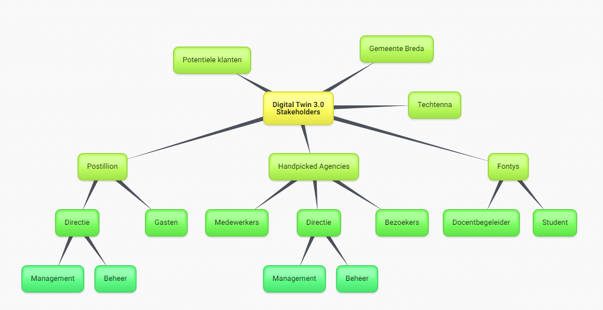
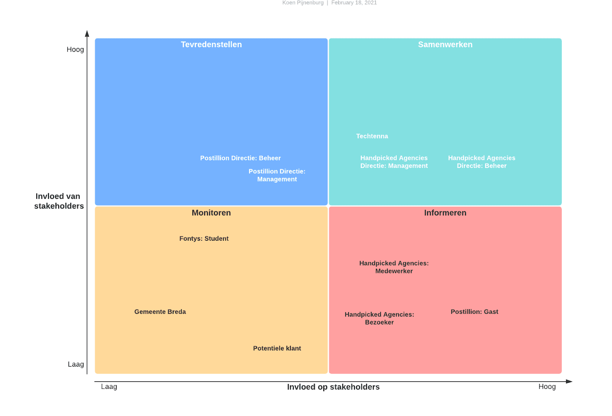

Introductie
Stakeholders analyse
Identificeren
Om de stakeholders te kunnen identificeren is een brainstormsessie gehouden. Het resultaat van deze sessie is een mindmap van alle personen of entiteiten die invloed hebben op de Digital Twin 3.0. Deze mindmap zal in de volgende hoofdstukken worden toegelicht.

Prioriteren
De stakeholders die in het vorige hoofdstuk geïdentificeerd zijn zullen in dit hoofdstuk worden geprioriteerd. Dit wordt gedaan door te kijken wat hun niveau van invloed is en hoeveel belang zij hebben bij het project. In het onderstaande “Stakeholder Power Interest Grid” wordt dit gevisualiseerd.
